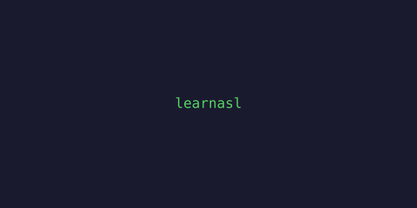
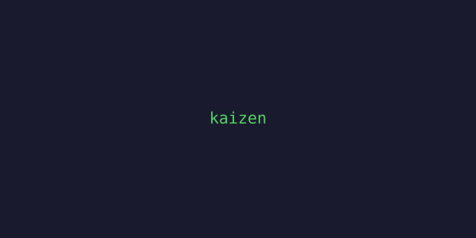
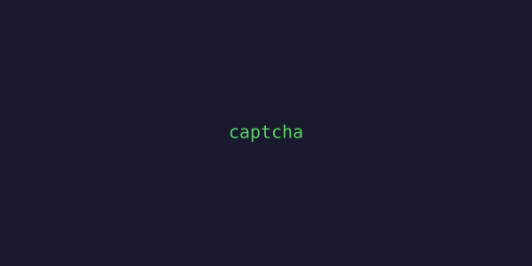

Hey, I'm Teniola 👋
I like building things that work, breaking things that shouldn't, and figuring out how everything connects in between.
MSc Computer Science @ Trinity College Dublin. Previously BSc Computer Science @ Dublin City University.
Right now I'm deep into my dissertation on internet cryptographic key reuse in Ireland - basically scanning the Irish internet to see how many servers are sharing keys they really shouldn't be sharing.
"Stay curious, stay building."
Dublin, Ireland

LearnASL
Duolingo-style platform for learning sign language with a live sign recognition model. Accessibility meets ML.

Irish Internet Key Survey
Scanning Ireland's internet to map cryptographic key reuse across TLS and SSH. Built on sftcd/surveys at TCD.

TikTok Clone
Full iOS TikTok clone - Swift frontend, Firebase backend. Feed, profiles, likes, the whole thing.

Dublin Bus Watch
Real-time Dublin Bus monitoring dashboard. Because the existing apps weren't cutting it.

Kaizen Journal
A journaling app built around the idea of continuous self-improvement. React + Firebase.

+ more on GitHub
Open Source Contributor
2025Hiero (Hedera) - hiero-sdk-js / hiero-sdk-java
Contributing to the Hiero blockchain SDK. JavaScript and Java implementations.
Hackathon Competitor
2023, 2025Huawei Ireland Tech Arena
Built a data assistant with ModelArts (2023). Returned for the optimization challenge (2025).
Frontend Developer
2022Enactus DCU
Built out the website frontend with Next.js and Tailwind CSS.
🎓 Education
MSc Computer Science - Trinity College Dublin (in progress)
BSc Computer Science - Dublin City University
💡 Interests
Cybersecurity, machine learning, mobile dev, distributed systems, and understanding how the internet actually works under the hood.
🌎 Hackathons
Huawei Tech Arena (2x), BNG Hackathon. Always looking for the next one.
🛠 Currently
Finishing my dissertation, scanning Irish servers, and looking for my next opportunity.